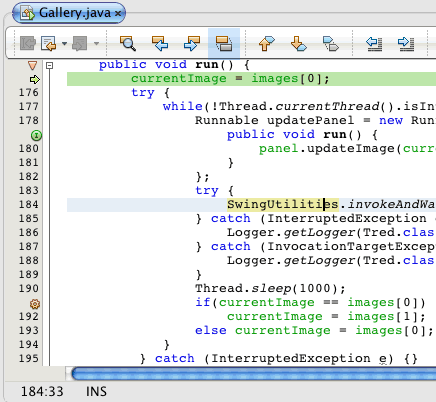

Apache NetBeans
Apache NetBeansLatest release
Отладка многопоточных приложений в IDE NetBeans
| This tutorial needs a review. You can open a JIRA issue, or edit it in GitHub following these contribution guidelines. |
В этом документе описывается использование окна 'Отладка' в IDE NetBeans для отладки многопоточных приложений. В данном руководстве также представлены способы использования среды IDE для обнаружения взаимоблокировок в приложении.
Процесс отладки значительно упрощен, поскольку вся информация о сеансах отладки, потоках выполнения и стеках вызовов потоков выполнения представлена в одном окне "Debugging". В окне "Debugging" удобно просматривать состояние потоков выполнения, а также приостанавливать и возобновлять выполнение любого потока в сеансе.
С целью демонстрации работы с окном "Debugging" в данном руководстве используются два примера проектов. В соответствии с указаниями в этом руководстве сначала загрузите, а затем откройте проекты "Gallery" и "Deadlock".
Просмотрите видео Отладка многопоточных приложений в IDE NetBeans.

Figure 1. Содержимое этой страницы применимо к IDE NetBeans 7.2, 7.3, 7.4 и 8.0
Для работы с этим учебным курсом требуется следующее программное обеспечение и ресурсы.
| Программное обеспечение или материал | Требуемая версия |
|---|---|
7.2, 7.3, 7.4, 8.0 |
|
версия 7 или 8 |
|
|
Загрузка примеров проектов
Простые проекты, используемые в этом руководстве, можно загрузить следующими способами.
-
Загрузите архив завершенного проекта в формате zip.
-
Выполните проверку исходных файлов проекта на выходе из примеров NetBeans, выполнив перечисленные ниже действия.
-
Выберите в главном меню "Группа > Subversion > Проверить".
-
В диалоговом окне "Проверка" введите следующий URL-адрес репозитория:
https://svn.netbeans.org/svn/samples~samples-source-codeНажмите кнопку "Далее".-
Нажмите кнопку Browse ("Обзор") для открытия диалогового окна Browse Repository Folders ("Обзор папок репозитория").
-
Разверните корневой узел и выберите samples/java/debugging-samples. Нажмите кнопку "ОК".
-
Укажите локальную папку для исходных файлов (папка должна быть пустой).
-
Нажмите кнопку 'Готово'.
-
-
После нажатия кнопки "Готово" среда IDE инициализирует локальную папку в качестве репозитория Subversion и выполняет проверку исходных файлов проекта на выходе.
-
Щелкните команду "Открыть проект" в диалоговом окне, которое появится после завершения проверки.
Примечание. Дополнительные сведения об изъятии для использования источников с помощью Subversion см. в разделе Настройка Subversion в Руководстве по Subversion в IDE NetBeans.
Открытие проектов
Для демонстрации отладки многопоточных приложений в среде IDE в данном руководстве используются два приложения. В этом упражнении необходимо открыть и затем запустить два проекта в среде IDE. После запуска проектов можно перейти к отладке каждого из них.
Запуск проекта "Gallery"
Приложение "Gallery" представляет собой простое приложение Java Swing для воспроизведения анимированных изображений. В приложении имеются две кнопки, позволяющие добавлять и удалять анимированные изображения. В этом упражнении будет выполнен запуск приложения "Gallery".
-
Загрузите и распакуйте архив +
debugging-samples.zip+ в локальной системе. -
В главном меню выберите "File > Open".
-
В каталоге примеров приложений для отладки найдите и выберите проект "Gallery". Нажмите кнопку Open ("Открыть").
При выборе "Open" в среде IDE проект будет открыт и выведен на экран в окне "Projects". После развертывания узла проекта в окне "Projects" видно, что он представляет собой простое приложение на Java для Swing.
-
Для запуска приложения "Gallery" щелкните правой кнопкой мыши узел проекта и выберите "Run".
-
В приложении "Gallery" нажмите кнопку "More" для добавления изображений и "Less" для удаления изображений.

Figure 2. Приложение "Gallery".
-
Закройте окно приложения "Gallery".
Проект Gallery представляет собой простое многопоточное приложение, процесс отладки которого описывается в данном руководстве.
Запуск проекта "Deadlock"
Приложение "Deadlock" содержит метод запуска потока выполнения main , который выполняется в течение 500 000 миллисекунд. Этот метод main запускает два потока выполнения, результаты которых отображаются в окне "Output".
-
В главном меню выберите "File > Open".
-
В каталоге примеров приложений для отладки найдите и выберите проект "Deadlock". Нажмите кнопку Open ("Открыть").
При выборе "Open" в среде IDE проект будет открыт и выведен на экран в окне "Projects". После развертывания узла проекта в окне "Projects" видно, что он представляет собой простое приложение Java.
-
Для запуска приложения "Deadlock" щелкните правой кнопкой мыши узел проекта и выберите "Run".
При нажатии кнопки "Run" откроется окно "Output", в котором отображается следующая выходная информация.
run:
Application started
MyThread2 successfully finished.
MyThread1 successfully finished-
Пусть приложение нормально завершит работу (пять минут).
По завершении работы приложения "Deadlock" в окне "Output" должна отображаться следующая информация.
Main thread finishedПроект "Deadlock" является простым приложением Java с двумя потоками выполнения. После отладки приложения будет создана взаимоблокировка с целью демонстрации возможностей среды IDE по обнаружению взаимоблокировок.
Отладка примеров проектов
Проект "Gallery" представляет собой простое приложение Java Swing для воспроизведения анимированных изображений. Добавление и удаление изображений в приложении осуществляется путем нажатия соответствующих кнопок. При нажатии кнопки "More" запускается новый поток выполнения, который выводит на экран и анимирует изображение. При нажатии кнопки "Less" останавливается самый новый поток выполнения, в результате чего анимация останавливается и изображение удаляется.
Приостановка потоков выполнения
В этом упражнении выполняется запуск отладки приложения "Gallery" и добавляются несколько изображений для запуска нескольких потоков приложения. После запуска сеанса отладки в левой области окна IDE открывается окно "Debugging". В окне "Debugging" отображается список потоков выполнения данного сеанса.
-
Щелкните правой кнопкой мыши проект "Gallery" в окне "Projects" и выберите "Debug".
После нажатия кнопки "Debug" в среде IDE запускается приложение "Gallery", и открываются окна отладки по умолчанию. Окно "Debugging" автоматически открывается в левой области главного окна, а окно "Debugger Console" – в окне "Output".
-
Трижды нажмите кнопку "More" в приложении "Gallery" для запуска трех потоков выполнения для воспроизведения анимированных изображений.
В окне "Debugging" отобразится процесс запуска новых потоков выполнения для каждой анимации.

Figure 3. Окно отладки
-
Приостановите два потока выполнения путем нажатия кнопки "Suspend thread" справа от каждого потока в окне "Debugging".
Если поток выполнения приостановлен, соответствующий значок изменится, отражая его новое состояние. Для просмотра стека вызовов потока выполнения можно развернуть узел этого потока. Щелкните правой кнопкой мыши элементы в окне 'Отладка', чтобы открыть всплывающее меню с командами отладки.

Figure 4. Окно отладки с двумя отложенными потоками
При просмотре приложения "Gallery" видно, что после приостановки потоков выполнения анимация для этих потоков прервалась.
Окно "Debugging" позволяет быстро просматривать и изменять состояние потоков выполнения в сеансе. По умолчанию в окне "Debugging" кнопки "Resume" и "Suspend" располагаются в правой области окна. Эти кнопки можно скрыть, после чего настроить вид окна "Debugging" с помощью панели инструментов в нижней области этого окна. При выполнении нескольких сеансов отладки для выбора сеанса, который должен отображаться в окне, можно использовать раскрывающийся список в верхней области окна "Debugging".

Figure 5. Панель инструментов окна отладки
Переключение потоков выполнения
В данном упражнении демонстрируются результаты последовательного выполнения приложения, если при этом другой поток приложения достигает точки останова. В этом упражнении описывается установка точки останова для метода и последовательное выполнение приложения. В процессе последовательного выполнения приложения будет запущен новый поток выполнения, который также достигнет точки останова. Когда это произойдет, на экран будет выведено уведомление в окне "Debugging". После этого следует выполнить переключение между потоками выполнения.
-
В окне приложения 'Галерея' нажимайте 'Больше' или 'Меньше' до тех пор, пока на экране не будут отображаться две или три анимации.
-
В окне 'Проекты' IDE разверните пакет
галереии дважды щелкнитеGallery.java, чтобы открыть файл в редакторе. -
В файле
Gallery.javaвставьте точку останова в начало методаrunпутем щелчка в левой части строки 175. -
Нажмите кнопку "More" в приложении "Gallery" для запуска нового потока выполнения, который должен достичь точки останова.
-
Нажмите Step Over ("По оператору с обходом процедур") (F8) и исполняйте метод по оператору, пока счетчик строк кода не достигнет строки 191.
В счетчике строк кода в поле редактора отображается текущее положение в коде при пошаговом выполнении метода.
-
Нажмите кнопку "More" в приложении "Gallery" для запуска нового потока выполнения, который должен достичь точки останова.
Когда новый поток выполнения достигнет точки останова, установленной в методе, в окне "Debugging" появится уведомление "New Breakpoint Hit", информирующее о том, что еще один поток выполнения достиг точки останова в процессе последовательного выполнения метода.

Figure 6. Уведомление 'Достижение новой точки останова'
Когда в процессе последовательного выполнения потока другой поток выполнения достигает точки останова, в среде IDE предлагается возможность выбора: переключение на другой поток выполнения или продолжение пооператорного выполнения текущего потока. Для переключения на поток выполнения, достигший точки останова, в уведомлении "New Breakpoint Hit" можно нажать кнопку со стрелкой. На новый поток выполнения можно переключиться в любой момент путем выбора потока в окне уведомления. При выборе пооператорного выполнения текущего потока, достигшего точки останова, возобновляется текущий поток выполнения, однако состояние других потоков приложения остается неизменным.
Примечание. В окне "Debugging" отобразится текущий поток (Thread_Jirka), который указывается с помощью зеленой полосы на границы. Поток выполнения, инициировавший уведомление при достижении точки останова (Thread_Roman), отмечен желтой полосой, а значок этого потока указывает на то, что данный поток выполнения приостановлен, поскольку достигнута точка останова.

Figure 7. Уведомление 'Достижение новой точки останова'
-
Для переключения между текущим потоком выполнения и новым потоком (Thread_Roman) в уведомлении "New Breakpoint Hit" нажмите кнопку со стрелкой.
После переключения на новый поток выполнения на экране можно увидеть следующее:
-
Счетчик команд переместился в позицию, соответствующую строке 175 в новом текущем потоке выполнения (Thread_Roman).
-
В поле строки 191 появилась аннотация приостановки потока, указывающая на то, что поток выполнения (Thread_Jirka) приостановлен на этой строке.

Figure 8. Редактор, в котором отображаются аннотации отладки
-
Для пошагового выполнения нового текущего потока (Thread_Roman) несколько раз нажмите "Обход процедур".
-
Щелкните правой кнопкой мыши аннотацию приостановки потока в поле редактора и выберите "Set as Current Thread > Thread_Jirka" для обратного переключения на приостановленный поток.

Figure 9. Редактор, в котором отображается всплывающее окно 'Задан как текущий поток'
Также можно вызвать окно 'Средство выбора текущего потока' (Alt+Shift+T; Ctrl+Shift+T на Mac) и переключиться на любой из потоков приложения.

Figure 10. Приложение "Gallery".
При обратном переключении на поток Thread_Jirka напротив строки, на которой был приостановлен поток Thread_Roman, появится аннотация приостановки потока. Возобновить поток Thread_Roman можно путем нажатия кнопки "Resume" в окне "Debugging".

Figure 11. Редактор, в котором отображаются аннотации отладки
Окно "Debugging" обеспечивает точное представление и контроль состояний потоков выполнения. Отладчик управляет потоками приложения, что упрощает процесс отладки и предотвращает возникновение взаимоблокировок. В этом упражнении были рассмотрены следующие принципы отладки приложения в среде IDE.
-
Когда поток выполнения достигает точки останова, приостанавливается только этот поток.
-
Если в процессе пооператорного выполнения приложения точки останова достигают другие потоки приложения, это не влияет на текущий поток выполнения.
-
При пооператорном выполнении приложения возобновляется только текущий поток выполнения. После выполнения оператора приостанавливается только текущий поток выполнения.
Теперь можно выйти из приложения "Gallery". В следующем упражнении будет выполнена отладка приложения "Deadlock" и продемонстрировано использование среды IDE для обнаружения взаимоблокировки.
Обнаружение взаимоблокировок
Среда IDE может использоваться для идентификации потенциальных ситуаций взаимоблокировки путем автоматического поиска взаимоблокировок по всем приостановленным потокам выполнения. При обнаружении взаимоблокировки в среде IDE на экран выводится соответствующее уведомление в окне "Debugging", в котором указаны задействованные потоки выполнения.
Для изучения процесса обнаружения взаимоблокировки в среде IDE необходимо запустить в отладчике демонстрационный проект "Deadlock" и создать ситуацию взаимоблокировки.
-
Разверните пакет
myapplicationи откройте файлыThread1.javaиThread2.javaв редакторе исходного кода. -
Установите точку останова для
Thread1.javaв строке 20 и дляThread2.javaв строке 20.
Для установки точки останова в поле редактора исходного кода щелкните поле напротив строки, в которой требуется установить точку останова. В левом поле напротив этой строки появится аннотация точки останова. Если открыть окно 'Точки останова' (Alt-Shift-5; Ctrl+Shift+5 на Mac), можно увидеть две установленные и активированные точки останова.

Figure 12. В редакторе отображаются точки останова, заданные в строке 20
-
Щелкните правой кнопкой мыши проект "Deadlock" в окне "Projects" и выберите "Debug".
При вызове метода main будут запущены эти два потока выполнения, при этом оба потока будут приостановлены в одной из точек останова. Потоки, приостановленные в точках останова, можно просмотреть в окне "Debugging".
-
В окне "Debugging" возобновите приостановленные потоки выполнения (
MyThread1иMyThread2) путем нажатия кнопки "Resume" справа от приостановленных потоков.

Figure 13. Восстановление приостановленных потоков в окне "Отладка".
Возобновление потоков выполнения MyThread1 и MyThread2 приведет к возникновению ситуации взаимоблокировки.
-
Выберите в главном меню команду "Debug\Check for Deadlock" для проверки приостановленных потоков выполнения на наличие взаимоблокировок.

Figure 14. Восстановление приостановленных потоков в окне "Отладка".
Если в ходе проверки приложения обнаружена взаимоблокировка, в окне "Debugging" появится сообщение, информирующее об этой ситуации. Потоки выполнения, находящиеся во взаимоблокировке, отмечаются красной полосой в левом поле окна "Debugging".
Настоящий учебный курс является общим введением в некоторые из функций отладки в среде IDE. Окно "Debugging" позволяет без труда приостанавливать и возобновлять потоки выполнения при отладке приложений. Это очень удобно при отладке многопоточных приложений.
Дополнительные сведения
Дополнительные сведения о разработке и тестировании приложений в IDE NetBeans см. следующие ресурсы:
-
Демонстрация: Отладка многопоточного приложения в IDE NetBeans
-
Демонстрация: + визуальная операция Step Into в отладчике NetBeans+
-
Демонстрация: обнаружение взаимоблокировки с помощью отладчика NetBeans
-
Демонстрация: использование блока оценки фрагмента кода в отладчике NetBeans
-
Учебная карта по основам среды IDE и программирования на языке Java